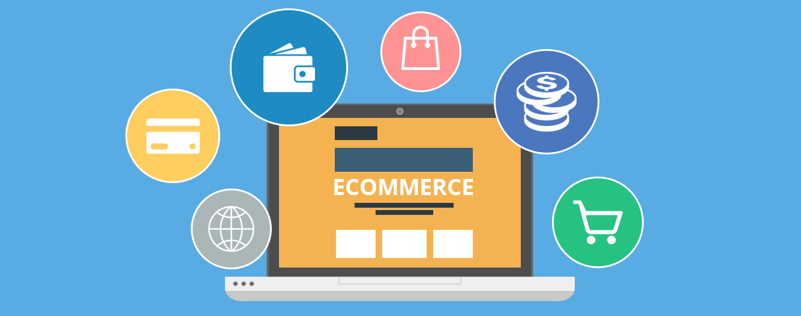

About :
Shopping is an activity in which a customer browses the available goods or services presented by one or more retailers with the potential intent to purchase a suitable selection of them. A typology of shopper types has been developed by scholars which identifies one group of shoppers as recreational shoppers, that is, those who enjoy shopping and view it as a leisure activity. Online shopping has become a major disruptor in the retail industry. Consumers can now search for product information and place product orders across different regions while online retailers deliver their products directly to the consumers' home, offices or wherever they want. The B2C (business to consumer) process has made it easy for consumers to select any product online from a retailer's website and to have it delivered relatively quickly. Using online shopping methods, consumers do not need to consume energy by physically visiting physical stores, but save time and the cost of travelling. A retailer or a shop is a business that presents a selection of goods and offers to trade or sell them to customers for money or other goods.